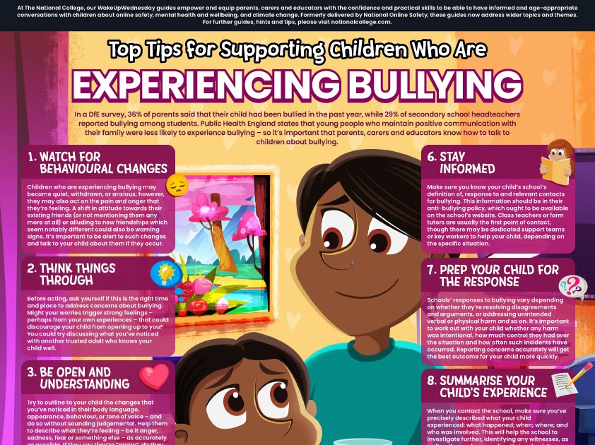

ABOUT US
Why we created this website
Children's websites play a crucial role in supplementing traditional education by providing an interactive platform for learning. These websites offer a wide range of educational resources tailored to different age groups and learning levels, including games, quizzes, tutorials, and interactive activities. By presenting educational content in a fun and engaging manner, children's websites can capture the attention of young learners and motivate them to explore new concepts and ideas. Whether it's practicing math skills through interactive games, learning about science through virtual experiments, or discovering new languages through multimedia lessons, these websites offer valuable opportunities for children to expand their knowledge and develop essential skills. Moreover, many children's websites align their content with curriculum standards, making them valuable resources for teachers and parents seeking to reinforce classroom learning outside of school hours. Ultimately, by harnessing the power of technology, children's websites empower young learners to discover, explore, and learn in an exciting and dynamic online environment.

Marketing
Marketing plays a crucial role in promoting children's websites and attracting their target audience of kids and parents. One key aspect of marketing children's websites involves understanding the needs and preferences of both children and parents to create targeted messaging and content that resonates with them.
Digital marketing strategies such as search engine optimization (SEO), social media marketing, and content marketing can be utilized to increase the visibility of children's websites online. Optimizing website content with relevant keywords and phrases ensures that it ranks higher in search engine results pages (SERPs), making it easier for parents and children to discover.
Social media platforms provide an opportunity to engage with parents and caregivers, share valuable content, and build a community around the children's website. Interactive and visually appealing content, such as educational videos, games, and challenges, can be shared across social media channels to attract attention and drive traffic to the website.
Customer communication
Customer communication is paramount for children's websites to establish trust and engagement with both young users and their parents or guardians. Clear and friendly messaging is essential, employing language that is easy for children to understand while also providing reassurance and transparency for parents. Interactive feedback mechanisms, such as contact forms or chatbots, should be implemented to allow users to easily reach out with questions or concerns. Prompt responses to inquiries demonstrate attentiveness to customer needs. Additionally, clear communication about parental controls and privacy policies is vital to reassure parents about their children's safety and data privacy. Providing educational resources and guides for parents can further enhance their understanding of the website's content and value. Regular updates and newsletters keep users informed about new features and events, maintaining engagement over time. By fostering a sense of community and transparency in communication, children's websites can create a positive and supportive online environment for young learners and their families.
Educational content
Central to the mission of children's websites is the creation and dissemination of high-quality educational content, designed to inspire, engage, and empower young learners. This content serves as a dynamic tool in nurturing children's curiosity, creativity, and cognitive development. By aligning with educational standards and curriculum objectives, children's websites offer a rich tapestry of multimedia resources spanning various subjects, from mathematics to literature, science to social studies. Through interactive games, videos, quizzes, and hands-on activities, these platforms cater to diverse learning styles, ensuring that every child can find avenues to explore and expand their knowledge. Moreover, educational content is not merely about imparting facts and figures; it's about fostering critical thinking skills, problem-solving abilities, and a lifelong love of learning. By presenting concepts in real-world contexts and providing opportunities for exploration and discovery, children's websites lay the foundation for a well-rounded education that prepares young minds for success in school and beyond.By creating high-quality educational content that is engaging, interactive, and accessible, children's websites can support learning and development in a digital age, empowering young learners to explore, discover, and succeed academically.
E-commerce oppurtunities
E-commerce opportunities within children's websites are diverse and promising, catering to the needs and interests of both young users and their parents. These platforms serve as convenient hubs for purchasing a wide array of products and services tailored specifically for children. From educational toys, books, and games that complement the website's curriculum, to children's apparel, accessories, and themed costumes, parents can find everything they need to support their child's growth and development. Additionally, a curated selection of toys, games, and puzzles fosters creativity and imagination, while children's books, media content, and subscription services promote literacy and entertainment. For parents seeking guidance and support, parenting resources and safety products are readily available to address their concerns and ensure the well-being of their children. By embracing these e-commerce opportunities, children's websites not only enrich the online experience for young users but also establish themselves as valuable resources for families navigating the world of parenting and education.By capitalizing on these e-commerce opportunities, children's websites can not only enrich the online experience for young users but also establish lucrative revenue streams by meeting the evolving needs and preferences of today's parents and caregivers.